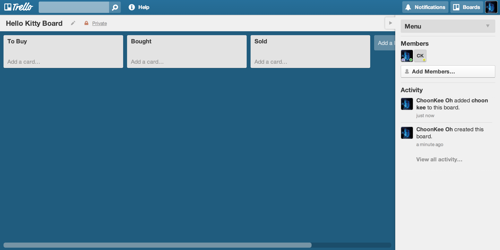
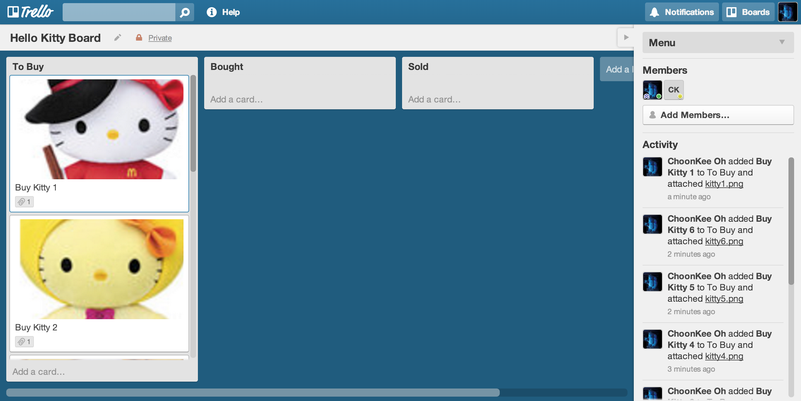
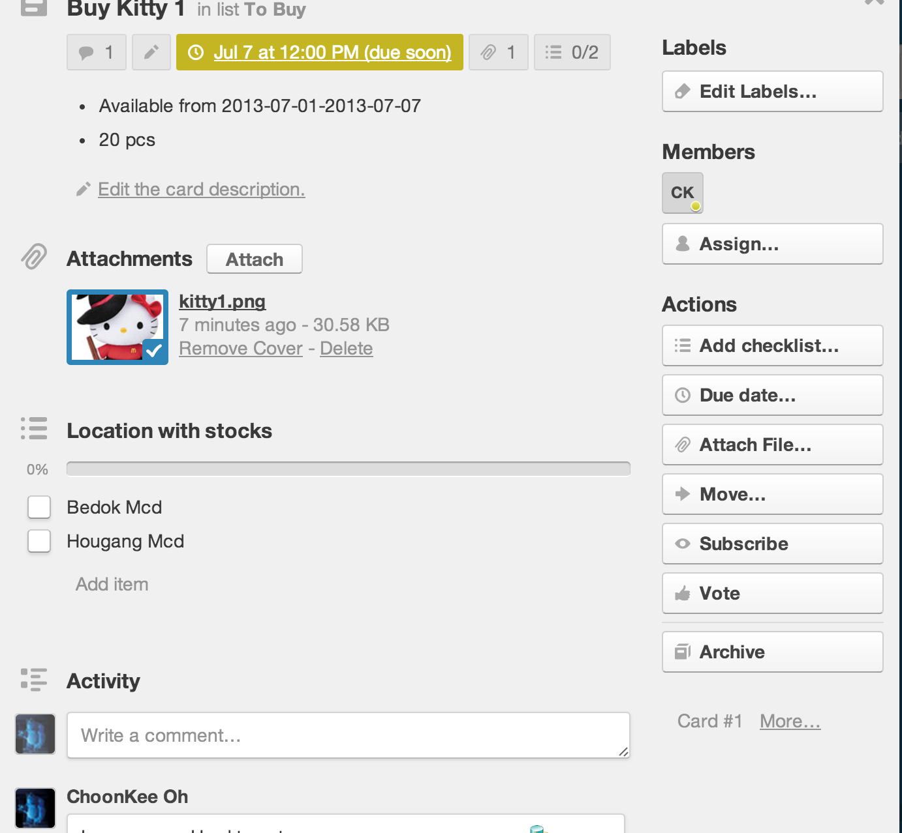
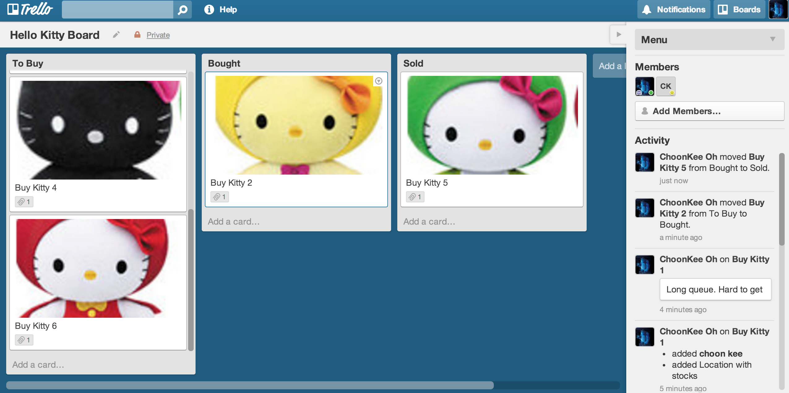
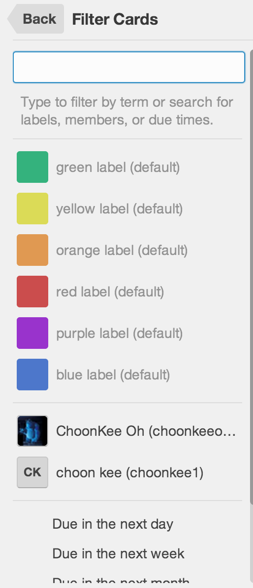
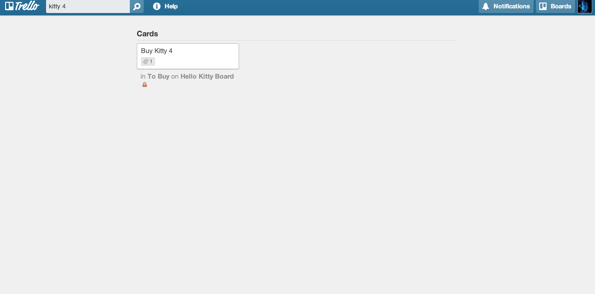
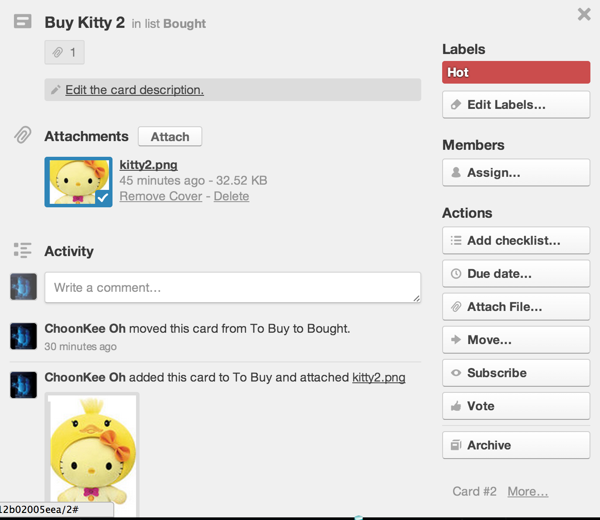
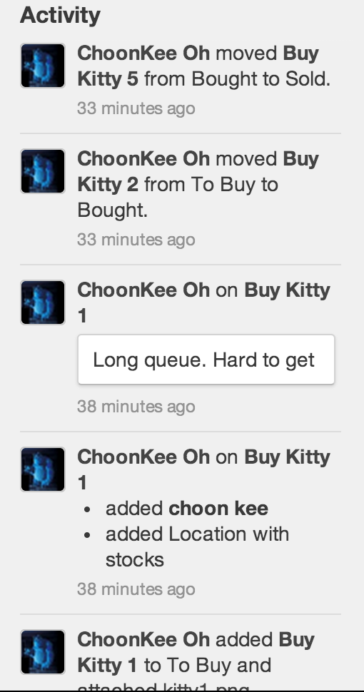

How to use Trello like a "Pro"
Created by Choon Kee / @soulofpeace
What is Trello?
Trello is free web-based project management application made by Fog Creek Software.
Kanban inspired

Comprises of
-
Boards

-
Cards

That is it!
Shall We End here?
Of course not
There is more!
Let me run you an example of how to use Trello
Ali runs a company that buys MacDonald Hello Kitties to sell on Ebay

He needs to
- Find out which Hello Kitty is on sale this week
- For each Hello Kitty he need to assign people to buy it
- He needs to keep track the locations that still has stock for Hello Kitty
- He needs to keep track of how many Hello Kitty he needs to buy for each model
- He needs to show his staff a picture of the Hello Kitty which they need to buy in case they buy the wrong Hello Kitty
He decides to use Trello to do that
First
He create a board for it with 3 Lists 
Then he create cards for each kitty
He update the card for each Kitty
Cards will move across the lists
He can filter cards
He can search across the cards
He can label the card
He can view all the activity in the board
He can now concentrate to sell his Hello Kitty more effectively